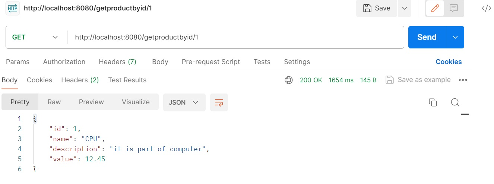
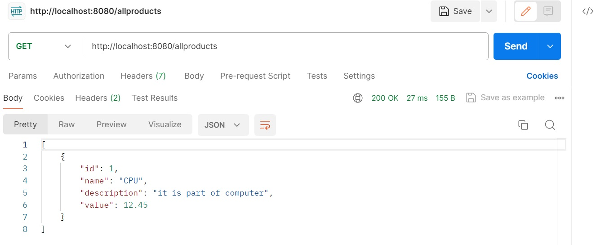

<!DOCTYPE html>
<html lang="en">

<head>
	<meta charset="utf-8">
	<title>Clavrit</title>
	<meta name="viewport" content="width=device-width, initial-scale=1.0" />
	<meta name="description" content="" />
	<meta name="author" content="http://webthemez.com" />
	<!-- css -->
	<link href="css/bootstrap.min.css" rel="stylesheet" />
	<link rel="stylesheet" href="https://unpkg.com/aos@next/dist/aos.css" />
	<link href="css/fancybox/jquery.fancybox.css" rel="stylesheet">
	<!-- <link href="css/jcarousel.css" rel="stylesheet" /> -->
	<link href="css/flexslider.css" rel="stylesheet" />
	<link href="css/style.css" rel="stylesheet" />
	<link href="css/blog.css" rel="stylesheet" />
	<link href="css/footer.css" rel="stylesheet" />

	<!-- HTML5 shim, for IE6-8 support of HTML5 elements -->
	<!--[if lt IE 9]>
      <script src="http://html5shim.googlecode.com/svn/trunk/html5.js"></script>
    <![endif]-->

</head>

<body>
	<div id="wrapper">
		<!-- start header -->
		<header>
			<div class="navbar navbar-default navbar-static-top">
				<div class="container">
					<div class="navbar-header">
						<button type="button" class="navbar-toggle" data-toggle="collapse"
							data-target=".navbar-collapse">
							<span class="icon-bar"></span>
							<span class="icon-bar"></span>
							<span class="icon-bar"></span>
						</button>
						<a class="navbar-brand" href="index.html"></a>
					</div>
					<div class="navbar-collapse collapse ">
						<ul class="nav navbar-nav">
							<li><a href="index.html">Home</a></li>
							<li><a href="services.html">Services</a></li>
							<!-- <li><a href="portfolio.html">Portfolio</a></li> -->
							<!-- <li class="active"><a href="pricing.html">Resources</a></li> -->
							<li class="dropdown">
								<a style="background-color: transparent; color: white" class="dropdown-toggle"
									data-toggle="dropdown" href="#">Resources <span class="caret"></span></a>
								<ul class="dropdown-menu">
									<li>
										<a class="d2" href="blogs.html">Blogs</a>
									</li>
									<!-- <li><a class="d2" href="caseStudies.html">Case Studies</a></li> -->
								</ul>
							</li>
							<li class="dropdown">
								<a style="background-color: transparent; color: white" class="dropdown-toggle"
									data-toggle="dropdown" href="#">Company <span class="caret"></span></a>
								<ul class="dropdown-menu">
									<li>
										<a class="d2" href="about.html">About Us</a>
									</li>
									<li><a class="d2" href="career.html">Career</a></li>
									<li><a class="d2" href="contact.html">Contact Us</a></li>
								</ul>
							</li>
						</ul>
					</div>
				</div>
			</div>
		</header><!-- end header -->
		<section id="inner-headline" style="padding: 0%;">
			<div class="container">
				<div class="row">
					<div class="col-lg-12">
						<h2 class="pageTitle">Blogs</h2>
					</div>
				</div>
			</div>
		</section>

		<div style="background-color: white; width: 100%; padding: 0%;" class="container">
			<div style="font-size: large;" class="col-md-9 col-md-offset-2 col-xs-20">
				<div style="font-size: medium;" class="mainheading">

					<!-- Begin Top Meta -->
					<!-- <div class="row post-top-meta">
						<div class="col-md-2 align">
							
						</div>
						<div class="col-md-10 col-sm-6 flex-container">
							<p>Mallika Gopal</p>
							<span class="author-description">I’m Mallika Gopal, but people call me “Mallika” I’m a
								backend developer, and I specialize in efficient Springboot Java apps. I care deeply
								about creating secure REST APIs and work closely with frontend team which results in
								productive outcomes.</span>
							<span class="post-date">07 March 2024</span><span class="dot"></span><span
								class="post-read">6 min read</span>
						</div>
					</div> -->
					<!-- End Top Menta -->

					<h1 class="posttitle">Reactive programming through Java</h1>

				</div>

				<!-- Begin Featured Image -->
				

				<!-- End Featured Image -->

				<!-- Begin Post Content -->
				<div class="article-post">
					<p>
						<br>
						Reactive programming is a developer paradigm focused on creating applications that are
						responsive to changes, asynchronous in nature, and driven by events. It emphasizes handling data
						streams and events as first-class citizens, enabling developers to write more efficient,
						scalable, and resilient code.
						Java reactive programming is a programming approach that emphasizes the development of
						applications that are both responsive and scalable, capable of handling both concurrent and
						asynchronous operations effectively.
					</p>

					<h3>Terms need to know:</h3>

					<p><span class="abc">Producer:</span>The producer acts as a data source and it will publish events.
						<br><span class="abc">Subscriber:</span> It listens to the events from the producer, it
						subscribes and consumes those events.
						<br><span class="abc">Processor:</span> It acts as a middleman that connects publisher to
						subscriber.
						<br><span class="abc">Stream:</span> It is a series of events that are ordered in time. A stream
						can emit three different types of signals: A value of a certain type, an error, or a completed
						signal.
						<br><span class="abc">Reactive Streams:</span> A standard for asynchronous stream processing
						with non-blocking backpressure.
						<br><span class="abc">Flux and Mono:</span> Specific types of observables provided by Project
						Reactor for handling streams of data. Flux represents a stream of multiple items, while Mono
						represents a stream of at most one item.
						<br><span class="abc">Backpressure:</span> The mechanism used to handle situations where the
						rate of data production exceeds the rate of data consumption.
						<br><span class="abc">Asynchronous Data Stream:</span> A stream of data that emits values one at
						a time with a delay between them is known as an asynchronous data stream.
					</p>
					<p>
					<h3>Core features of Reactive Programming:</h3>
					<ul>
						<li>New programming Paradigm</li>
						<li>Asynchronous and non-blocking</li>
						<li>Functional style code</li>
						<li>Data flow as event driven Stream</li>
						<li>Backpressure on data streams</li>
					</ul>


					<h3>Why we required Reactive Programming :</h3>

					<span class="abc">Inherently Lazy Execution:</span> Reactive programming promotes laziness, meaning
					computations don't occur until there's a subscriber. This "stop & play" capability allows for more
					efficient resource utilization and responsive applications.
					<br><span class="abc">Concise Code:</span> By focusing on modelling events and their dependencies,
					reactive programming often results in more compact implementations. Developers spend less time on
					implementation details and more on understanding the overall flow of events.
					<br><span class="abc">Less Code To Write:</span> With libraries like RxJS providing built-in
					operators for common behaviours (e.g., debouncing, throttling), developers spend less time
					implementing these functionalities from scratch. This leads to reduced development time and more
					maintainable codebases.
					<br><span class="abc">Effortless Cancellation:</span> Reactive programming simplifies cancellation
					mechanisms, making it easy to cancel on going operations. This capability is particularly useful in
					scenarios where users need to abort or change their requests or actions.
					</p>

					<p>
					<h3>How Reactive Programming working with Java:</h3>

					In Java, reactive programming is often implemented using libraries such as Reactive Streams, Project
					Reactor, and RxJava, which provide APIs for writing reactive code. These libraries allow developers
					to handle streams of data and events asynchronously, using concepts such as Observables, Observers,
					and Streams, and applying operators for processing and transforming data in a reactive and
					non-blocking manner.
					</p>
					<span class="abc">Project Reactor:</span> Developed by the Spring team, Project Reactor is a
					reactive programming library for building non-blocking applications on the JVM. It provides support
					for reactive streams, asynchronous operations, and reactive data processing.
					<br><span class="abc">RxJava:</span> RxJava is a reactive extension library for Java that implements
					the ReactiveX API. It allows developers to work with asynchronous data streams and provides
					operators for composing and transforming streams of data in a declarative and functional style.
					<p>
					<h3>Example:</h3>

					<h4>Basic Crud operation using Java Reactive programming:</h4>

					<h5>Entity:</h5>
					<pre>
@Table("products")
public class Product {

	@Id
	private Long id;
	private String name;
	private String description;
	private double value;

	public Long getId() {
		return id;
	}

	public void setId(Long id) {
		this.id = id;
	}

	public String getName() {
		return name;
	}

	public void setName(String name) {
		this.name = name;
	}

	public String getDescription() {
		return description;
	}

	public void setDescription(String description) {
		this.description = description;
	}

	public double getValue() {
		return value;
	}

	public void setValue(double value) {
		this.value = value;
	}

	public Product() {
		super();
	}

	public Product(Long id, String name, String description, double value) {
		super();
		this.id = id;
		this.name = name;
		this.description = description;
		this.value = value;
	}
}

</pre>

					<h5>Controller:</h5>
					<pre>
@RestController
public class ProductController {

	@Autowired
	ProductService productService;

	@GetMapping("/allproducts")

	public Flux<Product> getAllProducts() {
		return productService.getAllProducts();
	}

	@GetMapping("/getproductbyid/{id}")
	public Mono<Product> getProductById(@PathVariable Long id) {
		return productService.getProductById(id);
	}

	@DeleteMapping("/deleteproductbyid{id}")
	public Mono<Void> deleteProductById(@PathVariable Long id) {
		return productService.deleteProduct(id);
	}

	@PostMapping("/saveproduct")
	public Mono<Product> saveProduct(@RequestBody Product product) {

		return productService.saveProduct(product);
	}

}

</pre>

					<h5>Repository:</h5>
					<pre>
import org.springframework.data.repository.reactive.ReactiveCrudRepository;

public interface ProductRepository extends ReactiveCrudRepository<Product, Long> {

}
</pre>

					<h5>Service:</h5>
					<pre>
@Service
public class ProductService {
 
	@Autowired
	ProductRepository productRepository;
 
	public Flux<Product> getAllProducts() {
		return productRepository.findAll();
	}
 
	public Mono<Product> getProductById(Long id) {
		return productRepository.findById(id);
	}
 
	public Mono<Void> deleteProduct(Long id) {
		return productRepository.deleteById(id);
	}
	
	 public Mono<Product> saveProduct(Product product) {
	      
	        product.setId(null);
	        return productRepository.save(product);
	    }
 
}

</pre>

					<h5>Pom.xml:</h5>
					<pre>
<xmp>
<?xml version="1.0" encoding="UTF-8"?>
<project xmlns="http://maven.apache.org/POM/4.0.0"
	xmlns:xsi="http://www.w3.org/2001/XMLSchema-instance"
	xsi:schemaLocation="http://maven.apache.org/POM/4.0.0 https://maven.apache.org/xsd/maven-4.0.0.xsd">
	<modelVersion>4.0.0</modelVersion>

	<parent>
		<groupId>org.springframework.boot</groupId>
		<artifactId>spring-boot-starter-parent</artifactId>
		<version>3.1.5</version>
		<relativePath />
	</parent>

	<groupId>com.ill.test</groupId>
	<artifactId>sqlrx</artifactId>
	<version>0.0.1-SNAPSHOT</version>
	<name>sqlrx</name>
	<description>MySQL Rx Test</description>

	<properties>
		<project.build.sourceEncoding>UTF-8</project.build.sourceEncoding>
		<project.reporting.outputEncoding>UTF-8</project.reporting.outputEncoding>
		<java.version>17</java.version>

		<mysql-driver.version>1.0.1</mysql-driver.version>
	</properties>

	<dependencies>
		<dependency>
			<groupId>org.springframework.boot</groupId>
			<artifactId>spring-boot-starter-webflux</artifactId>
		</dependency>

		<dependency>
			<groupId>org.springframework.boot</groupId>
			<artifactId>spring-boot-starter-data-r2dbc</artifactId>
		</dependency>
		<dependency>
			<groupId>io.asyncer</groupId>
			<artifactId>r2dbc-mysql</artifactId>
			<version>${mysql-driver.version}</version>
		</dependency>
		<dependency>
			<groupId>org.projectlombok</groupId>
			<artifactId>lombok</artifactId>
			<optional>true</optional>
		</dependency>
		<dependency>
			<groupId>org.springframework.boot</groupId>
			<artifactId>spring-boot-devtools</artifactId>
			<scope>runtime</scope>
			<optional>true</optional>
		</dependency>
		<dependency>
			<groupId>org.springframework.boot</groupId>
			<artifactId>spring-boot-starter-test</artifactId>
			<scope>test</scope>
		</dependency>
		<dependency>
			<groupId>io.projectreactor</groupId>
			<artifactId>reactor-test</artifactId>
			<scope>test</scope>
		</dependency>
	</dependencies>

	<build>
		<defaultGoal>clean package</defaultGoal>

		<plugins>
			<plugin>
				<groupId>org.apache.maven.plugins</groupId>
				<artifactId>maven-enforcer-plugin</artifactId>
				<executions>
					<execution>
						<id>enforce-maven</id>
						<goals>
							<goal>enforce</goal>
						</goals>
						<configuration>
							<rules>
								<banDuplicatePomDependencyVersions />
								<requireMavenVersion>
									<version>3.6.3</version>
								</requireMavenVersion>
							</rules>
						</configuration>
					</execution>
				</executions>
			</plugin>
			<plugin>
				<groupId>org.apache.maven.plugins</groupId>
				<artifactId>maven-compiler-plugin</artifactId>
				<configuration>
					<encoding>${project.build.sourceEncoding}</encoding>
					<source>${java.version}</source>
					<target>${java.version}</target>
					<compilerArgument>-Xlint:all</compilerArgument>
					<showWarnings>true</showWarnings>
					<showDeprecation>true</showDeprecation>
				</configuration>
			</plugin>

			<plugin>
				<groupId>org.springframework.boot</groupId>
				<artifactId>spring-boot-maven-plugin</artifactId>
				<configuration>
					<excludes>
						<exclude>
							<groupId>org.projectlombok</groupId>
							<artifactId>lombok</artifactId>
						</exclude>
					</excludes>
				</configuration>
			</plugin>
		</plugins>
	</build>

</project>

</xmp>
</pre>
					<h5>Application.properties:</h5>
					<pre>
spring.r2dbc.url=r2dbc:mysql://localhost:3306/reactive
spring.r2dbc.username=root
spring.r2dbc.password=root

logging.level.org.springframework.data.repository=DEBUG
logging.level.org.springframework.r2dbc.core=DEBUG

</pre>

					<h5>Output:</h5>
					
					
					</p>
					<p>
					<h3>Steps:</h3>

					<span class="abc">Step 1:</span> Add required dependencies in pom.xml file.
					<br><span class="abc">Step 2:</span> Create a product entity with required fields.
					<br><span class="abc">Step 3:</span> Create a ProductRepository by extending ReactiveCrudRepository.
					<br><span class="abc">Step 4:</span> Create a ProductService and manage operations related to
					products.
					<br><span class="abc">Step 5:</span> Create a ProductController to handle client request related to
					products.
					<br><span class="abc">Step 6:</span> Configure the properties file for Database connectivity.
					</p>

					<p>
					<h3>Higly usage area’s of Reactive programming:</h3>

					<span class="abc"> Web Development:</span> Java reactive programming is a great approach when you
					aim to build websites that need to work with asynchronous, non-blocking, and concurrent requests.
					<br><span class="abc">IoT(Internet of things):</span> Reactive programming is a great tool for
					handling all the data streams from IoT devices. Since data generated from IoT devices is large, the
					responsive and flexible character of reactive programming makes it suitable for handling it.
					<br><span class="abc">Mobile Development:</span> Mobile app development, particularly for real-time
					applications and games, benefits from reactive programming. Libraries such as RxJava for Android and
					RxSwift for iOS enable developers to handle asynchronous tasks, manage data streams, and create
					responsive user experiences.

					</p>

					<p>
					<h3>Conclusion:</h3>

					Java reactive programming is a great tool for building robust, scalable, and responsive modern
					applications. It is natural for developers to experiment with new programming paradigms and strive
					for further development.
					</p>
				</div>
				<!-- End Post Content -->

				<!-- Begin Tags -->
				<div class="after-post-tags">
					<ul class="tags">
						<li>Design</li>
						<li>Growth Mindset</li>
						<li>Productivity</li>
						<li>Personal Growth</li>
					</ul>
				</div>
				<!-- End Tags -->

			</div>
		</div>
		<footer style="padding-top: 20px;">
			<div class="container">
				<div class="row" style="margin: 0px;">
					<div class="col-lg-4" id="contact">
						<div class="widget">
							<h5 class="widgetheading">Our Contact</h5>
	  
							<address style="margin-bottom: 0px;">
							  <strong>Clavrit Digital Solutions</strong><br />
							  18, Institutional Area,Prem Puri, Sector 32,<br>
							  Gurugram, Haryana,122001-India
							</address>
			 
							<p>
							  <i class="icon-phone"></i>
							  +91-9810167782<br />
							  <i class="icon-phone"></i> 0124- 7177829 <br />
							  <i class="icon-envelope-alt"></i>
							  info@clavrit.com
							</p>
						</div>
					</div>
	  
					<div class="col-lg-2" id="quickLinks">
						<div class="widget">
							<h5 class="widgetheading">Quick Links</h5>
	  
							<ul class="link-list">
							  <li>
								<a href="services.html">Services</a>
							  </li>
							  <l >
								<a href="about.html">About Us</a>
							  </li>
							  <li>
								<a href="blogs.html">Blogs</a>
							  </li>
							  <li>
								<a href="career.html">Career</a>
							  </li>
							  <li>
								<a href="contact.html">Contact us</a>
							  </li>
							</ul>
						</div>
					</div>
	  
					<div class="col-lg-4" id="contact">
						<div class="widget">
							<h5 class="widgetheading">Latest posts</h5>
	  
							<ul class="link-list">
							  <li>
								<a href="reactivejava.html"
								  >Reactive Programming Through Java</a
								>
							  </li>
			 
							  <li>
								<a href="SAPclassification.html"
								  >Classification Systems In SAP Commerce</a
								>
							  </li>

							  <li>
								<a href="SRGAN.html"
								  >Revolutionizing Image Enhancement: A Deep Dive into SRGAN</a
								>
							  </li>

							  <li>
								<a href="ExploratoryTesting.html"
								  >Exploratory Testing: Unleashing Creativity in Quality Assurance</a
								>
							  </li>
							</ul>
						</div>
					</div>
					
					<div class="col-lg-2"  id="quickLinks">
					  <div class="widget">
						  <h5 class="widgetheading">Quick Links</h5>
	  
						  <ul class="social-network" style="padding-left: 0px;">
							<li>
							  <a
								class="fa fa-facebook"
								data-placement="top"
								href="https://www.facebook.com/share/iBmat7SDtXvuHWrB/?mibextid=hu50Ix"
								style="font-style: italic"
								title="Facebook"
							  ></a>
							</li>
		   
							<li>
							  <a
								class="fa fa-linkedin"
								data-placement="top"
								href="https://www.linkedin.com/company/clavrit/"
								style="font-style: italic"
								title="Linkedin"
							  ></a>
							</li>
		   
							<li>
							  <a
								class="fa fa-instagram"
								data-placement="top"
								href="https://www.instagram.com/clav.ritdigitalsolutions?igsh=MWpnNDR2NTd2OGVybg=="
								style="font-style: italic"
								title="Instagram"
							  ></a>
							</li>
						  </ul>
					  </div>
				  </div>
				  <div class="col-lg-4"></div>
					
				</div>
			</div>
	  
			<div id="sub-footer" style="margin-top: 0px;padding-top: 0px;">
				<div class="container">
					<div class="row" style="margin-bottom: 0;">
						<div class="col-lg-12">
						  <div class="copyright" style="text-align: center;">
							<p>
							  <span>&copy; 2019. Clavrit Digital Solutions. All Rights Reserved..</span>
							</p>
						  </div>
						</div>
	  
					 
					 
					</div>
				</div>
			</div>
		</footer> 
	</div>
	<a href="#" class="scrollup"><i class="fa fa-angle-up active"></i></a>
	<!-- javascript
    ================================================== -->
	<!-- Placed at the end of the document so the pages load faster -->
	<script src="js/jquery.js"></script>
	<script src="js/jquery.easing.1.3.js"></script>
	<script src="https://unpkg.com/aos@next/dist/aos.js"></script>
	<script>
		AOS.init();
	</script>
	<script src="js/bootstrap.min.js"></script>
	<script src="js/jquery.fancybox.pack.js"></script>
	<script src="js/jquery.fancybox-media.js"></script>
	<script src="js/portfolio/jquery.quicksand.js"></script>
	<script src="js/portfolio/setting.js"></script>
	<script src="js/jquery.flexslider.js"></script>
	<script src="js/animate.js"></script>
	<script src="js/custom.js"></script>
</body>

</html>